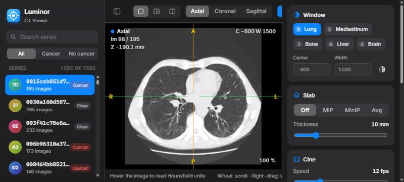
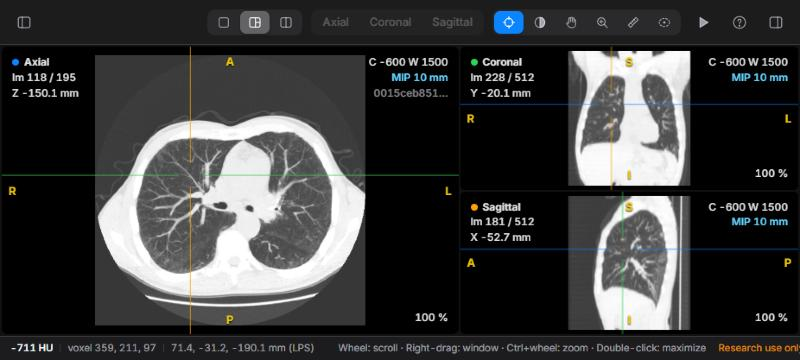
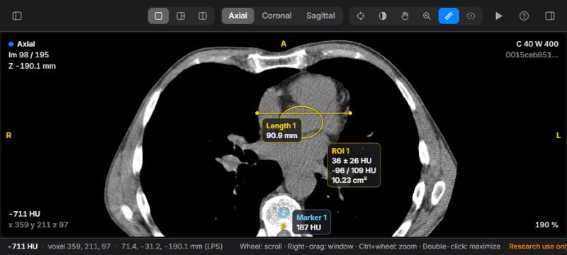
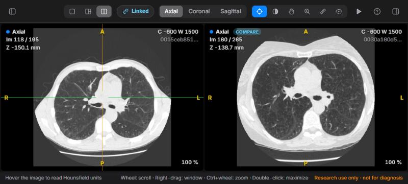
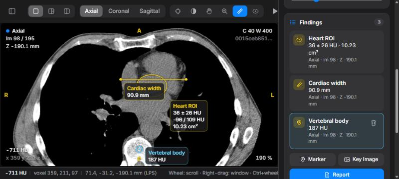
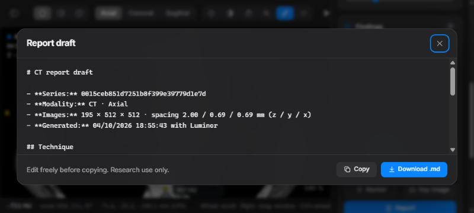

Reading CT with Luminor
Luminor is a fast, local CT viewer built around the seven actions radiologists use most. This guide walks you through each of them, from opening a study to exporting a report draft.
Research and education use only. Luminor is not a certified medical device. Do not use it to make diagnostic or treatment decisions.
2Getting started
Start Luminor
- Open a PowerShell window in the
Claude-Radiofolder. - Run
.\start.ps1. It uses theDICOMAnaconda environment when it exists, starts the server on port 8770 and opens your browser after two seconds. - Leave the PowerShell window open while you work. Closing it stops Luminor.
Luminor runs at http://127.0.0.1:8770/ in Chrome, Edge, Safari or Firefox. Options:
| Command | Effect |
|---|---|
.\start.ps1 -Port 9000 | Use another port if 8770 is busy. |
.\start.ps1 -DataDir "D:\scans" | Read series from another folder. Each sub-folder is one series of .dcm files. |
python server.py --labels file.csv | Optional id,cancer CSV used for the library labels and filter. |
Open a series
The library on the left lists every series in the data folder. Click a row to open it. Luminor first reads the DICOM files (a few seconds), then loads the volume into the browser. A progress card shows both steps.
- Search filters by series ID. Type any part of it.
- All · Cancer · No cancer filters by the dataset label. Rows show a red Cancer or grey Clear tag.
- Image counts appear as soon as the folders have been counted. Until then a row shows Counting….
- The next time you start Luminor, it reopens the last series you viewed.
Interface language
The EN / FR button (with a globe) in the toolbar switches the whole interface between English and French without reloading the study: labels, help, findings, the report draft and the on-image text. Luminor remembers your choice; on first launch it follows the browser language.
In French, Luminor follows French conventions: UH for Hounsfield units, decimal commas, C/L (centre/largeur) for the window and D/G (droite/gauche) instead of R/L for orientation. Finding names stay exactly as you typed them.
3The interface

- 1Library: series list, search, label filter and the compare button.
- 2Toolbar: layout, plane, tools, cine, help, panel toggles.
- 3Viewer: one to three image panes. The active pane has a blue outline.
- 4Overlay: plane, image number, position, window, slab, HU and zoom.
- 5Status bar: HU, voxel and patient coordinates under the cursor.
- 6Inspector: window, slab, cine, findings and series details.
The toolbar
| Control | What it does |
|---|---|
| Sidebar buttons (far left and right) | Show or hide the library and the inspector. On small screens both start hidden. |
| Layout: Single · MPR · Compare | One plane, three linked planes, or two studies side by side (L cycles). |
| Linked | Appears in Compare layout. Links scrolling, zoom and pan between the two studies (K). |
| Plane: Axial · Coronal · Sagittal | The plane shown in Single and Compare layouts (A C S). |
| Tools | What the left mouse button does: Crosshair X, Window/level W, Pan H, Zoom Z, Length M, Ellipse ROI E. |
| Play | Starts or stops cine (Space). |
| ? | Keyboard and mouse cheat sheet, with a link to this guide. |
| EN / FR | Interface language: English or French. |
Reading the overlay
| Corner | Shows |
|---|---|
| Top left | Plane name and colour (axial, coronal, sagittal), image number, and slice position in mm (Z for axial, Y for coronal, X for sagittal). A COMPARE badge marks the comparison study. |
| Top right | Window centre (C) and width (W), INV when inverted, the active slab (for example MIP 10 mm), and the series ID. |
| Bottom left | HU value and voxel indices under the mouse. |
| Bottom right | Zoom level. |
| Edges (yellow) | Patient orientation: R/L right/left, A/P anterior/posterior, S/I superior/inferior. As on any radiology display, the patient's right is on the left of an axial image. |
Always check the orientation letters before describing laterality. They are calculated from the DICOM orientation tags of each series. In the French interface they read D/G: D (droite) = right, G (gauche) = left.
4Scrolling & cine
Scrolling through the stack is the heart of CT reading, so it is always on the mouse wheel, whatever tool is selected.
| Action | Result |
|---|---|
| Mouse wheel | One image per notch. Trackpads scroll smoothly. |
| Shift + wheel | Five images per notch. |
| ↑ ↓ (or ← →) | One image. Add Shift for five. |
| Page Up Page Down | Ten images. |
| Home End | First or last image. |
| Space | Play or pause cine in the active pane. It loops back to the first image. |
Set the cine speed (2–40 images per second) with the Cine slider in the inspector. Cine and the keyboard act on the active pane, the one under your mouse, which has a blue outline.
5Window & level
CT images contain far more grey levels than a screen can show. The window chooses which Hounsfield range is displayed: the centre (level) sets the middle grey and the width sets the contrast.
Presets
| Key | Preset | Centre / width (HU) | Use it for |
|---|---|---|---|
| 1 | Lung | −600 / 1500 | Parenchyma, nodules, airways |
| 2 | Mediastinum | 40 / 400 | Heart, vessels, lymph nodes, soft tissue |
| 3 | Bone | 400 / 1800 | Ribs, spine, fractures, lytic or sclerotic lesions |
| 4 | Liver | 60 / 160 | Subtle low-contrast liver lesions |
| 5 | Brain | 40 / 80 | Narrow soft-tissue window |
Adjust freely
- Right-drag on any image, with any tool selected. Drag left/right to narrow or widen the window. Drag down/up to raise or lower the level: the image gets darker as you drag down. The drag speed adapts to the current width, so fine adjustments stay easy in narrow windows.
- Or select the Window/level tool (W) and use the left button.
- Or type exact values in Center and Width in the inspector.
- I inverts the grey scale.
The window applies to every pane, including the comparison study, so both are always displayed the same way.
6MPR & crosshair

Multiplanar reconstruction (MPR) rebuilds coronal and sagittal images from the axial stack, with correct physical proportions and the head at the top.
- Choose MPR in the layout control, or press L.
- Select the Crosshair tool (X). Click or drag on any pane to place the crosshair. The other two panes jump to that point.
- Scroll in any pane. The matching line moves in the other two.
- Double-click a pane to enlarge it. Double-click again to return to three panes.
The crosshair lines take the colour of the plane they represent: blue for axial, green for coronal, orange for sagittal.
To read a whole series in another plane, press C or S to switch the Single layout to coronal or sagittal. Press A to go back to axial.
Zoom and pan
- Ctrl + wheel (or a trackpad pinch) zooms around the mouse position, from 25 % to 1200 %.
- Middle-drag pans with any tool. The Pan (H) and Zoom (Z) tools do the same with the left button.
- R resets zoom and pan.
7Measurements

HU probe
Move the mouse over any image. The overlay (bottom left) and the status bar show the Hounsfield value of the voxel, its indices, and its patient coordinates in millimetres (LPS convention: +X is the patient's left, +Y posterior, +Z superior). The probe always reads the original voxel, even when a slab is displayed.
Length
- Select Length (M).
- Drag from one edge of the structure to the other. The distance in millimetres updates as you drag.
- Release to save it as a finding.
Lengths use the true pixel spacing of the plane, so they are also correct on coronal and sagittal reformats, where slice spacing and pixel size differ.
Ellipse ROI
- Select Ellipse ROI (E).
- Drag the bounding box of the ellipse over the region.
- Release. Luminor shows the mean ± standard deviation, minimum / maximum HU and the area.
ROI statistics are calculated on the single original image, never on a MIP/MinIP/average slab, so the values stay true Hounsfield units. Keep the ROI well inside the structure to avoid partial-volume averaging with its surroundings.
Markers
Press B (or the Marker button) to drop a marker at the crosshair position. It records the HU value at that point. This is useful for flagging a lesion you want to come back to.
Selecting and deleting
Measurements appear only on the image where they were drawn. Click one (with the Crosshair, Length or Ellipse tool) to select it. It turns light blue. Press Delete to remove the selected finding, or Esc to deselect it or cancel a drawing.
8MIP & slabs
A slab combines several adjacent images into one, centred on the current image. Choose the mode in the inspector's Slab card, or press T to cycle through them.
| Mode | Keeps | Best for |
|---|---|---|
| MIP | Brightest value along the slab | Lung nodules (they stand out from vessels), vessels, calcifications |
| MinIP | Darkest value | Airways, emphysema, air trapping |
| Avg | Mean value | Reducing noise in thin images |
Set the thickness from 2 to 40 mm with the slider or + / −. The overlay shows the thickness actually used, which is rounded to a whole number of slices. Slabs work in every plane and in every pane.
A good nodule search: lung window (1), MIP 8–10 mm (T), then scroll slowly from apex to base. Anything round that does not connect to a vessel as you scroll deserves a closer look on thin images.
9Comparison

- In the library, hover over the series you want to compare with and click the ⧉ button on its row.
- Luminor switches to the Compare layout. The comparison starts at the same relative height in the body as your current image.
- Scroll either pane. While Linked is on, the other follows by the same distance in millimetres, even if the two studies have different slice spacing. Zoom and pan are mirrored too.
Aligning two studies
Patients are never positioned identically, so align the studies on an anatomical landmark (for example the carina or a lesion) once:
- Press K to unlink.
- Scroll each pane to the same landmark.
- Press K again. Luminor records the offset between them, and they now scroll together at matching levels.
Changing the plane re-centres the comparison study, so re-align after switching between axial, coronal and sagittal. Measurements and markers are made on the current study (left pane).
10Findings & reports

Working with findings
- Rename: click the name, type (for example "RUL nodule"), and press Enter. The name also appears on the image.
- Go to: click a finding to jump straight to its image. The crosshair centres on it, and Luminor switches plane if needed.
- Delete: hover over a finding and click the trash icon, or select it and press Delete.
- Findings are saved automatically on your computer, one file per series in
Claude-Radio/data/findings/. They come back when you reopen the series.
Report draft

Click Report in the Findings card. Luminor writes a draft with the series details, a technique line, a numbered list of your findings with values and locations, and an empty Impression section. Complete the contrast phase, protocol and impression yourself. Then click Copy to paste it into your report, or Download .md to save it.
Key images
Key image saves the active pane as a PNG, including measurements, the overlay text, orientation letters and a "research use only" watermark. The file name contains the series, plane and image number, for example key-image_0015ceb8_axial_98.png.
11A reading routine
A suggested systematic routine for a chest CT. Adapt it to your own practice.
- Lungs: press 1, scroll from apex to base, then repeat with a 10 mm MIP (T) for nodules. Use MinIP for airways.
- Mediastinum: press 2. Check the heart, great vessels, oesophagus and lymph node stations. Measure nodes on their short axis (M).
- Bones: press 3. Read the spine in sagittal (S) and the sternum and ribs on axial and coronal images.
- Upper abdomen: press 4 for the liver, then check the adrenals, kidneys and spleen.
- Characterise: confirm each finding in MPR, measure it, and place ROIs to check density (fat, fluid, soft tissue, calcium).
- Compare: open the prior study, align it, and check whether lesions are new, stable or changed.
- Report: name your findings, save key images, then open Report and complete the impression.
12Keyboard & mouse
Press ? (or /) in Luminor for this list. Shortcuts are ignored while you are typing in a text field. Click an image to return to the viewer.
| Input | Action |
|---|---|
| Wheel · ↑ ↓ | Previous / next image |
| Shift + wheel or arrows | Five images |
| Page Up / Page Down | Ten images |
| Home / End | First / last image |
| Space | Play / pause cine |
| Right-drag | Window / level |
| Middle-drag | Pan |
| Ctrl + wheel | Zoom at the mouse position |
| Double-click | Enlarge / restore pane |
| 1 – 5 | Lung · mediastinum · bone · liver · brain window |
| I | Invert |
| R | Reset zoom and pan |
| A · C · S | Axial · coronal · sagittal |
| L | Cycle layout: Single → MPR → Compare |
| T | Slab: Off → MIP → MinIP → Avg |
| + / − | Slab thickness ±2 mm |
| X · W · H · Z | Crosshair · window/level · pan · zoom tool |
| M · E | Length · ellipse ROI tool |
| B | Marker at the crosshair |
| Delete | Delete the selected finding |
| K | Link / unlink comparison |
| Esc | Cancel drawing / deselect |
13HU reference
Typical unenhanced CT values, as orientation for the probe and ROI tool. Values vary with scanner, protocol, contrast and noise.
| Material | Typical HU |
|---|---|
| Air | ≈ −1000 |
| Aerated lung | −900 to −500 |
| Fat | −120 to −60 |
| Water, simple fluid | 0 to 20 |
| Soft tissue, muscle | 20 to 60 |
| Unenhanced blood | 30 to 45 |
| Acute haemorrhage | 50 to 90 |
| Calcification, cortical bone | > 300, up to 2000+ |
14Troubleshooting
| Problem | What to do |
|---|---|
| The page does not load | The server is not running. Run .\start.ps1 and keep its window open. |
| "Port already in use" | Luminor is probably already running: open 127.0.0.1:8770. Otherwise start it with -Port 9000. |
| "Could not open series" | The folder must contain readable .dcm files of one series. Check the PowerShell window for the error. |
| Opening is slow | The first opening reads every DICOM file (a few seconds per study). The last three studies stay cached, so reopening them is quick. |
| The image is black or white | The window does not match the tissue. Press 1 or 2. |
| Keys do nothing | A text field has focus (search, window values, a finding name). Click on an image. |
| Scrolling skips images | Some mice send large wheel steps. Use the arrow keys for single-image steps. |
| "Could not save findings" | The server stopped while you were working. Restart it. Findings made before that were already saved. |
| The browser slows down | Each study uses about 100 MB of memory, and Compare holds two. Close other heavy tabs, or reload the page. |
15Privacy & limitations
- Local only. The server accepts connections from this computer only (127.0.0.1). Images and findings never leave it. The only outside request is for the Inter font from Google Fonts; without internet, Luminor uses your system font.
- Not for diagnosis. Luminor has not been validated or certified as a medical device. Use it for research, teaching and exploration.
- Data. Luminor reads CT series stored as folders of DICOM files. It does not connect to a PACS, and it does not support multi-frame or compressed formats that pydicom cannot decode.
- Geometry. Reformats assume a standard axial acquisition with evenly spaced slices, which is true of typical chest CT. Check the orientation letters on unusual series.
- Reports. The report draft lists only what you measured. Clinical context, technique details and the impression are always yours to write.